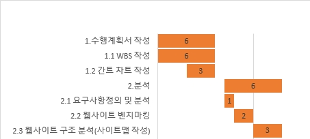
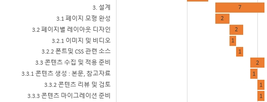
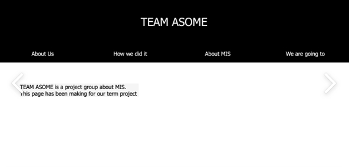
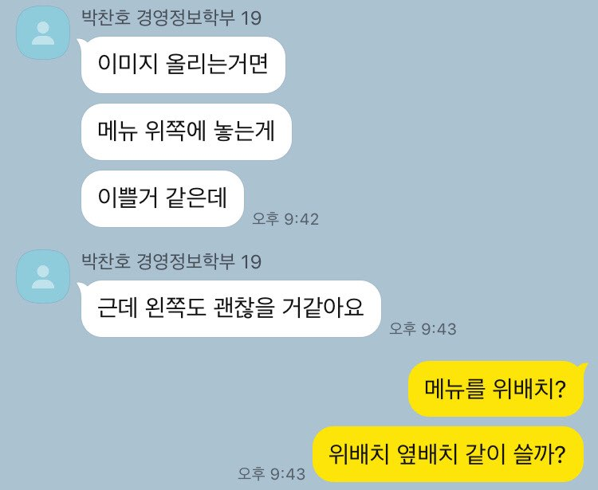

How we did it
프로젝트 시작은 9월 24일.
중간고사 직전부터 수업 때 진행했던 프로젝트 관리에 관한 것들을 적용하여 수행 계획서와 요구사항 정의서를 먼저 작성했다.
만든 것을 토대로 간트 차트를 작성하고 난 후 가장 먼저 팀의 감성에 맞는 디자인과 가독성에 대해서 많이 생각했다.


(아무래도 기능적인 부분의 구현에 대한 고민은 당시 미흡했던 코딩 실력을 고려하여 미뤄둬야만 했다.)
그 후엔 우리의 감성에 맞는 홈페이지를 찾아보는 것이 먼저였다. 우리가 만들 수 있는 정도의
UI가 적용된 페이지를 찾기는 힘들었지만, 그래도 '느낌'정도는 살리고 싶다는 것이 우리의 취지였다.
그러한 과정을 겪은 후 우리 모두가 화려하고 복잡한 디자인은 지양하고 싶다고 입을 모았다.
구현 자체에 대한 두려움도 있었지만 간단하고 가독성이 높은 페이지가 오히려 그 뒤로도 관리가 편할 것이라는
결론을 내렸고, 디자인 컨셉은 '심플 블랙'으로 결정되었다.

본격적인 단계에 돌입하기 시작한 것이 중간고사 기간이 끝난 후였다. 수업 때 교수님께서
진행하시면서 가르쳐주신 목업(mock-up)을 만들기 시작했다. 페이지 구성에 대한 고민은 이미 끝낸 후였고
페이지 별로 어떤 레이아웃이 괜찮을지, 어떤 컨텐츠를 포함하면 좋을지에 대한 의견들이 오고 갔다. 그 과정에서
우린 앞으로도 컨텐츠를 지속적으로 업데이트를 할 수 있으며, '자기표현'이 가능한 컨텐츠들을 선택했다.
폰트나 페이지 제작에 필요한 소스들을 구하는 데에는 큰 어려움이 없었다. 다만 우리가 계속 염두에 뒀던 점은
요구사항정의서의 내용을 지키되, 너무 어려운 것에 대한 욕심을 내지 말자는 것이었다.

그렇게 모아진 컨텐츠들을 들고 우리는 개발을 시작했다.
답답한 부분들이 터져나왔다. 우리는 홈페이지 코딩을 처음 접하는 사람들이었고 한 문제를 해결하면 다른 문제가 발생하는 '밑빠진 독에 물 붓기'식 코딩이었다고 생각한다. 하지만 시행 착오 자체를 두려워하지는 않았기 때문에, 헛웃음을 찾아가면서 이런 저런 문제들을 해결해 나갔다. 오른쪽에 보이는 페이지가 개발 극 초기 단계의 페이지다. 교수님의 교안에서 코딩을 참고하여 첫 페이지를 만들었다. 이름 모를 누군가가 해놓은 것을 그대로 베껴서 컨텐츠를 바꾸면 솔직히 뿌듯함이 없을 것 같았다. 사서 고생하기 위해 우리가 구성해야 할 페이지들의 개발을 해나가면서 각자의 코딩 실력도 처음보다는 나아졌다.
답답한 부분들이 터져나왔다. 우리는 홈페이지 코딩을 처음 접하는 사람들이었고 한 문제를 해결하면 다른 문제가 발생하는 '밑빠진 독에 물 붓기'식 코딩이었다고 생각한다. 하지만 시행 착오 자체를 두려워하지는 않았기 때문에, 헛웃음을 찾아가면서 이런 저런 문제들을 해결해 나갔다. 오른쪽에 보이는 페이지가 개발 극 초기 단계의 페이지다. 교수님의 교안에서 코딩을 참고하여 첫 페이지를 만들었다. 이름 모를 누군가가 해놓은 것을 그대로 베껴서 컨텐츠를 바꾸면 솔직히 뿌듯함이 없을 것 같았다. 사서 고생하기 위해 우리가 구성해야 할 페이지들의 개발을 해나가면서 각자의 코딩 실력도 처음보다는 나아졌다.

그 뒷 과정은 생략하고 싶다. 코딩을 하고 체크한 뒤에 피드백 하는 과정의 반복이었고
그 과정을 통해 배운 것도 많지만, 우리는 더 큰 것을 배웠고 그 것에 대해 이야기할 차례다.
유독 경영대학에만 팀 프로젝트가 많은 것은 기분 탓일 수도 있겠지만, 위에서 언급한 일련의 작업들을 통해서
배우는 것은 아주 기본이라고 생각한다. 그 외에 우리가 얻을 수 있었던 것은 커뮤니케이션과 협동심이다.
축구 팀에서도 한명만 잘한다고 해서 그 팀을 최고로 쳐주지 않는 것처럼, 팀 플레이가 중요하다고 생각했다.
우리는 정말 자주 소통하려고 노력했다. 물론 이 프로젝트가 1등을 받는다면 정말 좋을 것이다. 그 것을 위해 노력하는 것은 충분히 가치 있는 일이고, 더욱 뿌듯함을 느끼겠지만 우리는 의도치 않게 팀이 되어 위와 같은 과정을 조율해 나가는 법을 배웠다. 다같이 배웠고 다같이 해냈기에 더욱 의미있는 팀 프로젝트였고, 기회가 된다면 계속 발전시켜나가고 싶은 부분들이 많은 아쉬움이 남는 프로젝트였다.
우리는 정말 자주 소통하려고 노력했다. 물론 이 프로젝트가 1등을 받는다면 정말 좋을 것이다. 그 것을 위해 노력하는 것은 충분히 가치 있는 일이고, 더욱 뿌듯함을 느끼겠지만 우리는 의도치 않게 팀이 되어 위와 같은 과정을 조율해 나가는 법을 배웠다. 다같이 배웠고 다같이 해냈기에 더욱 의미있는 팀 프로젝트였고, 기회가 된다면 계속 발전시켜나가고 싶은 부분들이 많은 아쉬움이 남는 프로젝트였다.